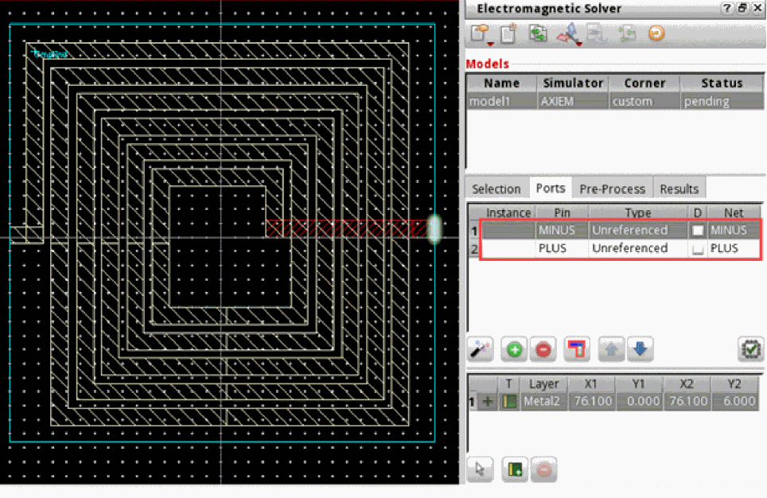

Creating an S-Parameter Model for the Complete Layout (Passive Devices)
If the IC layout is a passive device, we can characterize that layout cellview as an S-parameter cellview. Similarly, in scenarios where an IC layout contains devices, such as inductors or MIMCAP devices, but you cannot access the nets and connectivity details, you can export the model for the complete layout as an S-parameter cellview, which is an S-parameter results file. In addition, you can create a symbol view, which you can use to instantiate the model in a schematic.
To extract the model for a layout as a complete S-parameter cellview:
-
Open the layout in Layout MXL and set the workspace to
Electromagnetic.
The following sample layout contains an inductor for which connectivity details are not available:
- Specify the process setup in the process corner directory.
- Create a new model in the Electromagnetic Solver assistant.
- Select a process corner and specify a simulator that you want to use to run electromagnetic simulation.
-
Select the Extract Full Cellview check box at the bottom of the Electromagnetic Solver assistant.
-
On the Ports tab, click Automatically Generate Ports to create ports for the top-level pins of the instances available in the layout.
For the example layout shown above, the tool automatically identifies the two top-level pins, PLUS and MINUS, and adds those to the ports table, as shown below.
Similarly, if the layout contains two inductors, the tool identifies ports of both inductors and adds four ports to the port table. -
Run the simulation by using an appropriate command for your selected simulator.
After the simulation run is complete, the path to the S-parameter file is available on the Results tab of the Electromagnetic Solver assistant.
-
Click Create S-Parameter View on the toolbar of the Electromagnetic Solver assistant.
The Create S-Parameter View form appears.
-
Specify a name for the cell and S-parameter view in the Cell and View fields, respectively. The default view name is
sparam.
By default, the Create Symbol check box is selected to create a symbol view too. Deselect it if you do not want to create a symbol. -
Click OK to create the cellviews.
The CIW shows messages indicating that the new cellview has been created.
The model has now been successfully extracted as a complete cellview. The new sparam view and the symbol view are visible in the Library Manager. These are also added to the library database.
You can double-click the sparam cellview to open and review its contents. The sparam views are text-based and are opened in the default text editor.
You can use the extracted S-Parameter cellviews by creating their instances in a schematic view, as shown in the following figure:
The pins of the instances can be used to establish connections with other devices in the schematic to build the design.
You can right-click the instance in the schematic and choose Properties to explore the properties of this instance. The properties listed in the Edit Object Properties form are similar to any other n-port object.

Before netlisting a design that contains an instance of your sparam view, provide a mapping in the config view because the schematic view of this object is not available.
The following example shows how to bind an sparam view in the Virtuoso Hierarchy Editor.

For more details about cellview binding, refer to
For details about creating a netlist and running simulations, refer to Virtuoso ADE Explorer User Guide.
Return to top